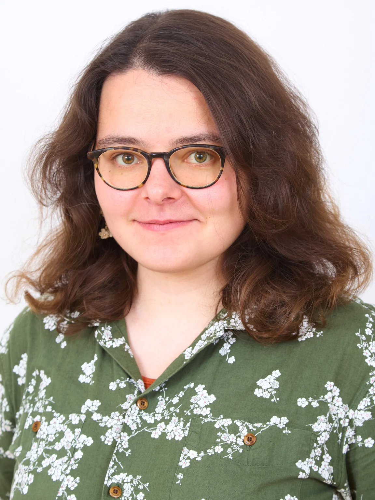

Liana
Khazaliya
Postdoctoral Researcher Aalto University
Based in the Helsinki region, Finland

I am a postdoctoral researcher at Aalto University and the Helsinki Institute for Information Technology (HIIT), in the Department of Computer Science. I work with Sándor Kisfaludi-Bak.
My research interests lie in theoretical computer science: graph algorithms, parameterized complexity, and geometric aspects of computational problems. I completed my PhD at TU Wien, with a thesis on Tractability Barriers for Parameterized (Geo)Metric Graph Problems, advised by Robert Ganian.
Metric Dimension and Geodetic Set Parameterized by Vertex Cover
Journal version: Journal of Computer and System Sciences (JCSS), Vol. 164 (2027)
Upward and Orthogonal Planarity are W[1]-hard Parameterized by Treewidth
Journal version: SIAM Journal on Discrete Mathematics (SIDMA) Vol. 40, Iss. 2 (2026)
Extending Orthogonal Planar Graph Drawings is Fixed-Parameter Tractable
Journal version: Journal of Computational Geometry (JoCG 2025), Vol. 15 No. 2 (2024)
Metric Dimension Parameterized by Feedback Vertex Set and Other Structural Parameters
Journal version: SIAM Journal on Discrete Mathematics (SIDMA), Vol. 37, Iss. 4 (2023)
Aalto University & HIIT
Postdoctoral Researcher · Department of Computer Science
Espoo / Helsinki, Finland · Host: Sándor Kisfaludi-BakTU Wien
PhD · Algorithms and Complexity Group
Vienna, Austria · Advisor: Robert GanianNational Institute of Informatics
Research Intern
Tokyo, Japan · Host: Shuichi HiraharaSaint Petersburg State University
MSc · Advanced Mathematics
Saint Petersburg, Russia · Thesis supervisor: Ivan BliznetsMax Planck Institute for Informatics
Intern Student
Saarbrücken, Germany · Remote · Dániel Marx’s research groupBelarusian State University
BSc · Mathematics
Minsk, Belarus · Thesis supervisors: Ivan Bliznets, Boris DoubrovTeaching
Structural Graph Decompositions (TU Wien, 2025)
Algorithms (Saint Petersburg State University, 2021–2022)
Reviewing
Conferences: WALCOM 2027, CCCG 2026, SWAT 2026, WG 2026, SODA 2025, WALCOM 2025, ESA 2024, SoCG 2024, STACS 2024, GD 2023, IPEC 2022, SOFSEM 2022
Journals: ACM Transactions on Algorithms, SIAM Journal on Discrete Mathematics, Journal of Artificial Intelligence
Sertified in Rope Access Services;
Strava fan, average cycling enjoyer.